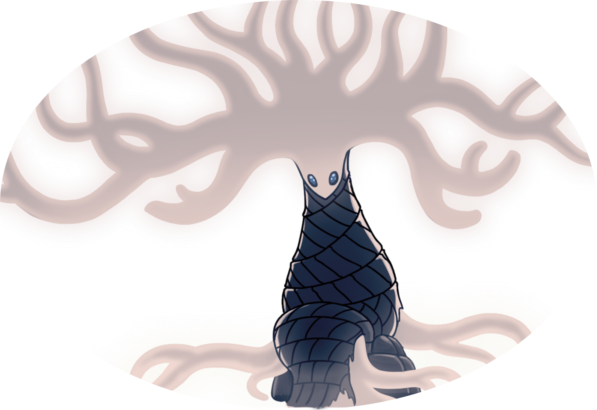

Similar ao Caminho Verde, mas diferente o suficiente para ser especial de suas maneiras. Desde a flora delicada e complexa até a arquitetura mais sofisticada, é possível perceber que essa zona não é terra de qualquer um. A música exala a mesma paz, mas o ambiente está cheio de louva-a-deuses que foram infectados. Diferente de outros insetos, eles aceitaram a infecção como meio para ficarem mais fortes.
Similar ao Caminho Verde, mas diferente o suficiente para ser especial de suas maneiras. Desde a flora delicada e complexa até a arquitetura mais sofisticada, é possível perceber que essa zona não é terra de qualquer um. A música exala a mesma paz, mas o ambiente está cheio de louva-a-deuses que foram infectados. Diferente de outros insetos, eles aceitaram a infecção como meio para ficarem mais fortes.
"Oh! Alguém chegou. Muito andou para me encontrar. Está buscando a minha ajuda?
Ou será que a estrada leva você por acaso ao lugar certo?
É verdade. É verdade que te esperava. Não, talvez esteja um pouco incorreta. Na verdade, um como você era esperado.
Eu tenho um presente, guardado por um longo tempo para alguém como você. Metade de um todo.
Quando unido, um grande poder é concedido, e no caminho que te espera, grande poder será necessário." - Dama Branca